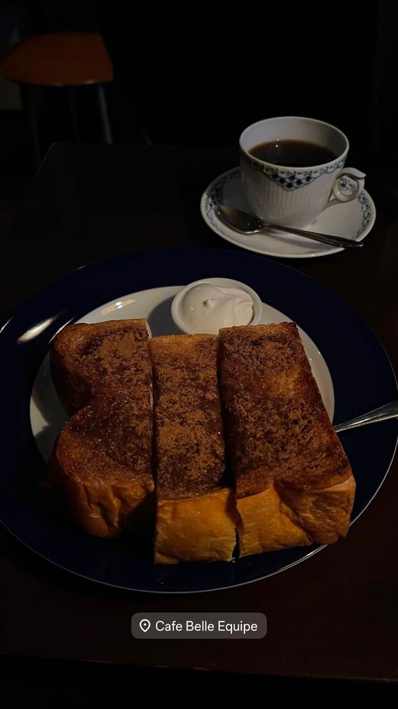
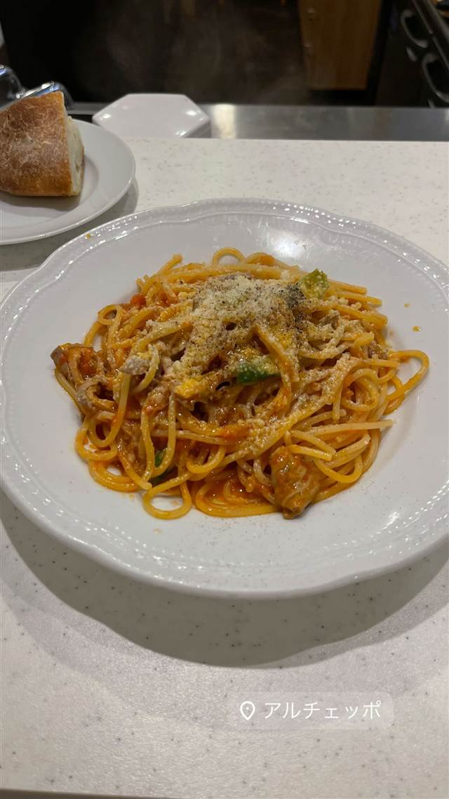

ベルエキップ（Belle Equipe）
フランス語で「良き仲間」を意味し、一杯ずつ淹れるネルドリップ珈琲
Cafe Belle Equipe
白金高輪の住宅街にひっそりと佇む喫茶店「Cafe Belle Equipe（ベルエキップ）」。店名はフランス語で「良き仲間」を意味する。学生時代からコーヒーの修業を積んだ店主・柊豊氏が一人で切り盛りし、ネルドリップの自家製コーヒーと手作りケーキ、サンドイッチを静かな空間で提供している。
TRIVIA
豆知識
- 店名はフランス語で「良き仲間」を意味し、看板には副題で「one for the road（去り際の一杯）」と添えられている
REVIEWS
世間の評判
3.34食べログ
落ち着いた大人の空間と手作りデザート
- 薄暗く落ち着いた大人の空間でジャズが流れる雰囲気を評価する声が多い
- カフェグラッセやかぼちゃプリンなど手作りデザートの美味しさを挙げる人が多い
- コーヒーが丁寧に淹れられていて美味しいと評価する声が多いという意見がある
- 価格帯がリーズナブルで気軽に利用できると感じる人が多いという声がある
食べログ 口コミ110件
| 看板 | ネルドリップで淹れる自家製コーヒー、自家製ケーキ、サンドイッチ、スペシャリティのアイリッシュコーヒー |
|---|---|
| こだわり | 一杯ずつ丁寧に淹れるネルドリップのコーヒーにこだわる。 |
| どこから | 都心 |
| 営業時間 | 月〜金 12:00-23:00 土 13:00-23:00 日 13:00-21:00 |
| 予算 | 昼 ¥1,000～¥1,999 夜 ¥1,000～¥1,999 |
| 場所 | 白金高輪駅 東京都港区白金1-14-4 1F |
| メモ | 白金高輪駅から徒歩3〜5分の閑静な住宅街にある小さな喫茶店。 |
食べたもの：トーストとコーヒー
NEARBY
近い店・同じ系統の店
-
 ★
喫茶店 浅草
金龍（喫茶店）
元は旅館だった建物で味わうサイフォン式コーヒー
昼 ¥1,000～¥1,999 夜 ¥1,000～¥1,999
★
喫茶店 浅草
金龍（喫茶店）
元は旅館だった建物で味わうサイフォン式コーヒー
昼 ¥1,000～¥1,999 夜 ¥1,000～¥1,999
-
 ★
焼肉 白金高輪駅
炭焼 金竜山
ロンドン帰りの店主夫妻が焼く上タン塩とシャトーブリアン
夜 ¥20,000～¥29,999
★
焼肉 白金高輪駅
炭焼 金竜山
ロンドン帰りの店主夫妻が焼く上タン塩とシャトーブリアン
夜 ¥20,000～¥29,999
-
 ピザ 白金高輪
タランテッラ ダ ルイジ（TARANTELLA da luigi）
マルゲリータ考案者の子孫に師事した店主のナポリピッツァ
昼 ¥1,000～¥1,999 夜 ¥6,000～¥7,999
ピザ 白金高輪
タランテッラ ダ ルイジ（TARANTELLA da luigi）
マルゲリータ考案者の子孫に師事した店主のナポリピッツァ
昼 ¥1,000～¥1,999 夜 ¥6,000～¥7,999
-

パスタ 白金高輪 アル チェッポ (Al Ceppo) 季節で北と南のイタリアが入れ替わる、ビブグルマンの一皿 昼 ¥1,000～¥1,999 夜 ¥8,000～¥9,999 -
 喫茶店 御茶ノ水駅
自家焙煎珈琲 みじんこ
銅板でじっくり焼き上げる厚みのあるホットケーキ
昼 ¥1,000～¥1,999 夜 ¥1,000～¥1,999
喫茶店 御茶ノ水駅
自家焙煎珈琲 みじんこ
銅板でじっくり焼き上げる厚みのあるホットケーキ
昼 ¥1,000～¥1,999 夜 ¥1,000～¥1,999
-
 喫茶店 根津駅
カヤバ珈琲
大正5年築の町家建築で一度閉店後に地元NPOの手で復活した
昼 ¥1,000～¥1,999 夜 ¥1,000～¥1,999
喫茶店 根津駅
カヤバ珈琲
大正5年築の町家建築で一度閉店後に地元NPOの手で復活した
昼 ¥1,000～¥1,999 夜 ¥1,000～¥1,999